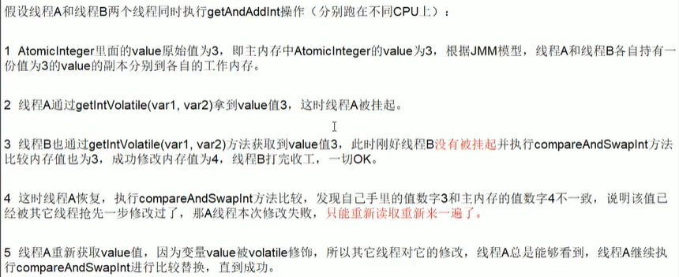
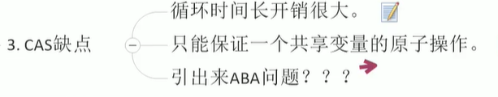
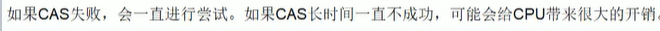
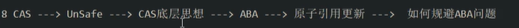
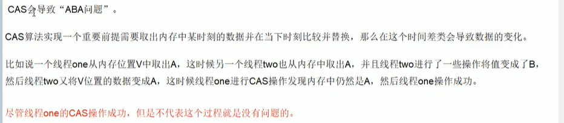

# 自旋锁
# CAS 原理

public final int getAndAddInt(Object var1, long var2, int var4) { | |
int var5; | |
// 自旋锁 ，获取最新值判断成功去修改，不成功继续循环 | |
do { | |
var5 = this.getIntVolatile(var1, var2); | |
} while(!this.compareAndSwapInt(var1, var2, var5, var5 + var4)); | |
return var5; | |
} |



# ABA 问题


/** | |
* @author WangXuefeng | |
* @version 1.0 | |
* @date 2021/8/4 13:54 | |
* @description ABA 问题 | |
*/ | |
public class ABADemo { | |
static AtomicReference<Integer> atomicInteger = new AtomicReference(100); | |
static AtomicStampedReference<Integer> reference = new AtomicStampedReference<>(100, 1); | |
public static void main(String[] args) throws InterruptedException { | |
System.out.println("========================以下是ABA问题的产生========================"); | |
new Thread(() -> { | |
atomicInteger.compareAndSet(100,101); | |
atomicInteger.compareAndSet(101,100); // 实际已经操作过了 100 | |
},"t1").start(); | |
new Thread(() -> { | |
try { | |
TimeUnit.SECONDS.sleep(1); | |
} catch (InterruptedException e) { | |
e.printStackTrace(); | |
} | |
System.out.println(atomicInteger.compareAndSet(100, 2021) + " -> " + atomicInteger.get()); | |
//true -> 2021 还是修改成功了，未管原来的 100 是否被人动过 | |
},"t2").start(); | |
TimeUnit.SECONDS.sleep(3); | |
System.out.println("========================以下是解决ABA问题========================"); | |
new Thread(() -> { | |
try { | |
TimeUnit.SECONDS.sleep(1); | |
} catch (InterruptedException e) { | |
e.printStackTrace(); | |
} | |
System.out.println(Thread.currentThread().getName() + "当前版本号：" + reference.getStamp()); | |
reference.compareAndSet(100, 101, reference.getStamp(), reference.getStamp() + 1); | |
System.out.println("第二次版本号：" + reference.getStamp()); | |
reference.compareAndSet(101, 100, reference.getStamp(), reference.getStamp() + 1); | |
System.out.println("第三次版本号：" + reference.getStamp()); | |
},"t3").start(); | |
new Thread(() -> { | |
int stamp = reference.getStamp(); | |
System.out.println(Thread.currentThread().getName() + "当前版本号：" + stamp); | |
try { | |
TimeUnit.SECONDS.sleep(2); | |
} catch (InterruptedException e) { | |
e.printStackTrace(); | |
} | |
boolean b = reference.compareAndSet(100, 2021, stamp, stamp + 1); | |
System.out.println("修改是否成功：" + b + "当前值" + reference.getReference()); | |
},"t4").start(); | |
} | |
} |